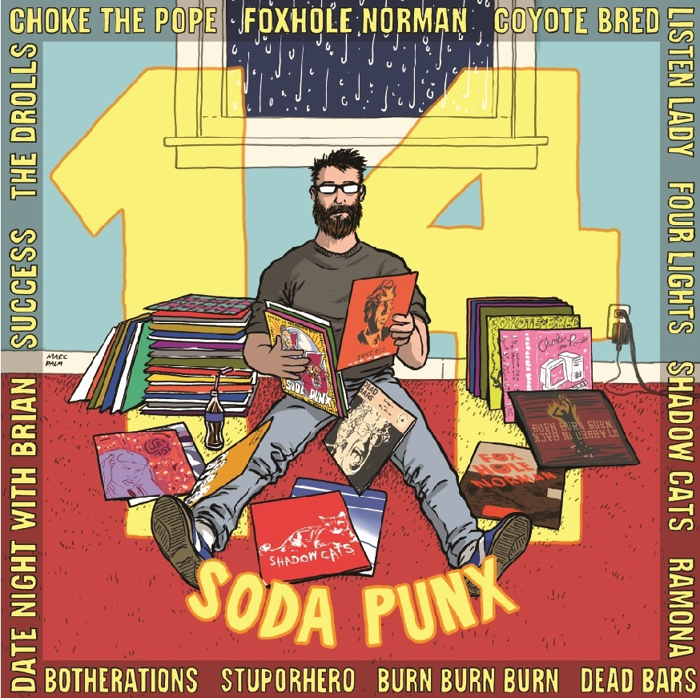
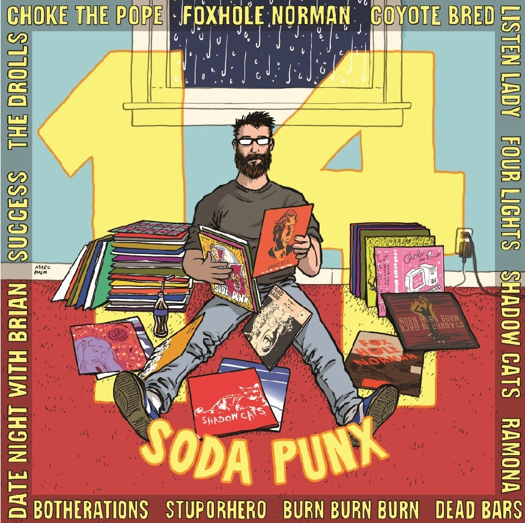

At The Highline 210 Broadway Ave E. Seattle, WA 98102
7PM to Midnight, January 19th and 20th 2018
Tickets available SOON.
The Story... 24 years ago, Seattle's own Top Drawer Records put out the seminal Pop Punk LP: 13 Soda Punx. Hosting bands such as the Fasbacks, Bum, Sicko, Mr T Experience, and many others, this LP brought light to a scene that would one day topple the giants of the music industry. Now, 24 years later, Top Drawer is once again on the move, bringing you an LP of 14 (one more this time!) Seattle Pop Punk bands, each one kicking unprecendented levels of ASS. This festival is both a celebration of their collective contributions, and a record release party for a super cool new LP: 14 Soda Punx.